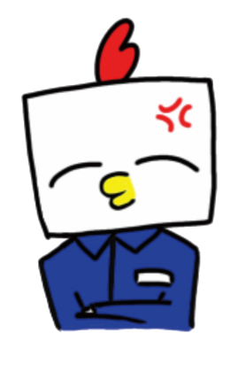
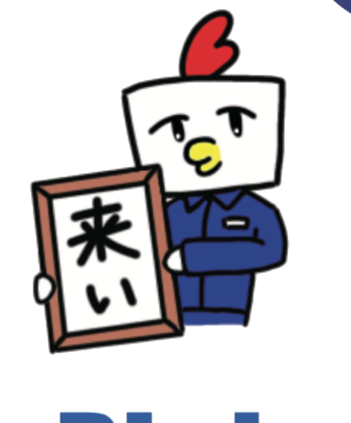

TBT OFFICIAL MASCOT / OUR FLIGHT LOG
飛べない鳥が、空を目指す。
「やあ、待ってたよ。一緒に行こう！」
これは、とびとくんとあなたの空を目指す旅。
START / FLIGHT LOG 00出発前に、相棒を紹介。
まずは、きみとぼく。
一緒に行くのは、
ぼく。
「ぼくはニワトリだけど、空を飛ぶのを諦めたこと、一度もないんだ。
きみも、一緒に空を見に行かない？」
PROFILE PHOTO / 001

TOBITO-KUNNAMEとびとくん
HOMETeam Birdman Trial
STYLE四角い顔と赤いトサカ。青いつなぎがトレードマーク。
DREAMみんなと一緒に、空を飛ぶこと。
※ このページの性格・物語の描写はサイト内のキャラクター設定を含みます。
飛ぶことは、
あきらめない。
WAYPOINT 01 / TRAINING LOGふたりの特訓記録
旅の途中に撮った、スナップ写真。
ぼくらの、
練習記録。
「こんな練習もしたよね。
次はもっと高く跳べるかな？」
矢印で、思い出の1ページをめくろう。
01 / 03
POSE 001
飛行機ポーズ
両腕をいっぱいに広げて、飛行機みたいに。空への憧れをそのままポーズにしました。
FIELD TEST / BONUS MISSION途中でちょっと、寄り道。
「いったん特訓しない？」
とびとくんと、
遊ぼう。
飛ぶ。逃げる。風をつかまえる。
気になったところから、好きに遊んでね。
NEW / QUICK CHALLENGE
25 SEC
追い風キャッチ！
水色の風をタップして集めよう。金色はボーナス、赤い乱気流には気をつけて。100点以上でクリア！
スコア0
コンボ0
のこり25秒
ベスト0
とびとくん「がんばるトビ！」
GOAL 100 PTS
100+
※ 琵琶湖フライト・やきとり脱出は従来のゲーム画面に移動します。旧版のすべての機能を残したまま、新しい3D体験を追加しています。
WAYPOINT 02 / HANGAR大きな翼との対面
「見て、ぼくたちの翼だよ！」
40メートルの、
翼の下へ。
「近くで見ると、やっぱり大きいね。
さあ、飛ぶ前の点検をはじめよう！」
ここでS-320 Elementを3Dで調べられるよ。

風が吹いてきた。
さあ、飛ぼう！
「ここまで一緒に来てくれてありがとう。
旅はここで終わりじゃない。ここからが本当のフライトだよ。」
OUR FLIGHT LOG / COMPLETED
ふたりの搭乗証
一緒に歩いた記念に、搭乗証を発行しよう。名前は端末内だけで使われるよ。
TBT / TOBITO AIRWAYSFLIGHT LOG 001
BOARDING
PASS旅の記念搭乗証
PASS旅の記念搭乗証
CREW NAMETRAVELER
FLIGHTTBT S-320
DESTINATIONTHE SKY
STATUSREADY FOR TAKEOFF
TOBITO × YOU
LET'S FLY.
2026